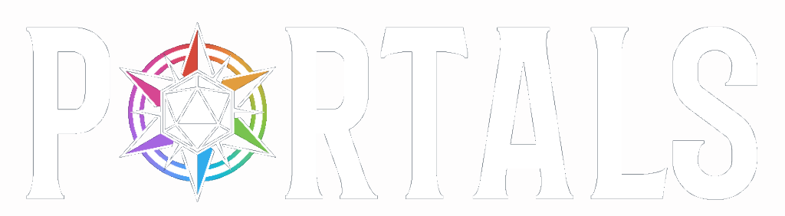

← All projectsCase study / Visual identity & interactive design
Visual identity / Branding / UI design

Building a cohesive identity for a tabletop RPG.
A unified system of logos, class iconography, and digital experiences.
Project overview
Portals is a collaboratively developed tabletop role-playing game. I designed its visual identity and class icon system, then adapted the original character sheet designs created by the game's developers into a guided, interactive website. The digital experience standardizes layouts, helps players follow character creation rules, and automates calculations. The site remains in active development and testing.